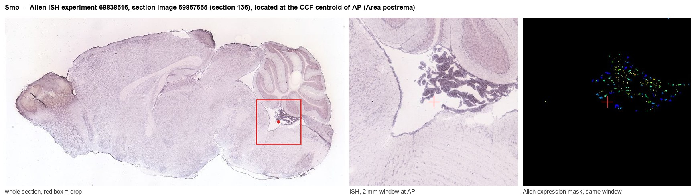
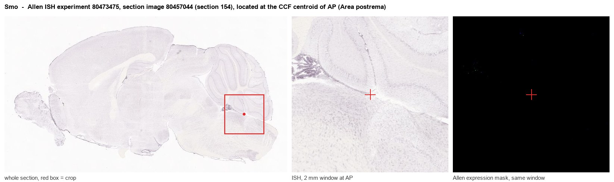
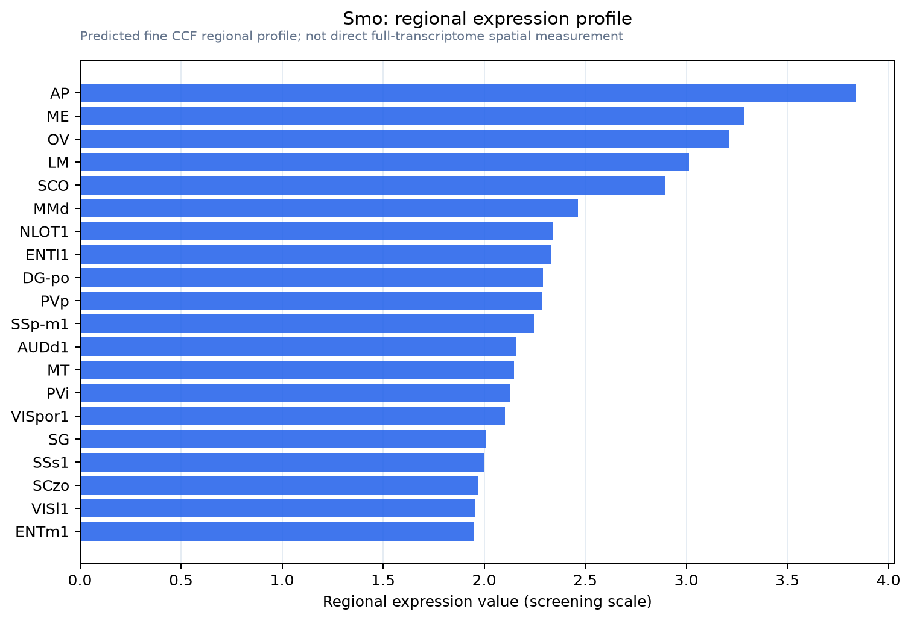

Smo
Protein smoothened
Spatial tier: REGION_BIASED · Class: GPCR · Top region: AP (Area postrema) · Positive regions: 51/554
Function in AP: evidence, prediction, innovation
- Gene function
- Smoothened is a class-F GPCR and the obligate transducer of Hedgehog signalling. When Sonic hedgehog binds Patched1, Patched's inhibition of SMO is relieved, SMO accumulates in the primary cilium and is stabilised by cholesterol binding, de-repressing GLI transcription factors. SMO controls patterning, progenitor proliferation and adult glial identity.
- Region function
- The area postrema is a circumventricular organ in the dorsal medulla whose fenestrated capillaries let it sample blood-borne GDF15, amylin, GLP-1 and toxins. Its excitatory neurons project to the NTS and parabrachial nucleus to drive nausea, emesis, conditioned taste aversion and anorexia.
- Published in this region
- expression only No functional study of Smo in the AP. Traiffort et al. 1998 detected Smo transcripts in every adult rat brain region examined, including brainstem, without resolving the AP; Farmer et al. 2016 showed Shh-SMO signalling remains active in adult brain, where neurons use it to diversify local astrocytes.
- Predicted function
- Prediction: in AP, SMO most plausibly acts in the ciliated tanycyte-like ependyma and astrocytes rather than in nausea neurons, maintaining the glial-ependymal barrier that defines this circumventricular organ. The agonist SAG should expand AP tanycyte/astrocyte populations, whereas glia-restricted deletion (GFAP-CreER; Smo-flox) should erode the AP glial limitans and shift the dose-response to circulating GDF15 or amylin; neuron-restricted loss should barely affect acute nausea.
- Innovation
- ★★★★☆ 4/5 Hedgehog signalling is well worked out in cerebellum and adult astrocytes but untouched in the AP, whose tanycyte-like ependyma is exactly the ciliated cell type SMO acts in.
- Tools
- Smo floxed allele and SmoM2 constitutively active allele; Gli1-CreERT2 and Ptch1-LacZ pathway reporters; agonists SAG and purmorphamine; antagonists cyclopamine, SANT-1, vismodegib; validated anti-SMO antibodies; Shh-flox and Shh-Cre lines.
- References
Direct evidence located at the region

Allen ISH experiment 69838516, section image 69857655 (section 136): the section that contains the CCF centroid of Area postrema according to the Allen image-to-atlas alignment (reference_to_image), with a 2 mm window around that point. Left: whole section, red box = window. Middle: ISH signal. Right: Allen's expression-mask view of the same window. open this image in the Allen viewer

Allen ISH experiment 80473475, section image 80457044 (section 154): the section that contains the CCF centroid of Area postrema according to the Allen image-to-atlas alignment (reference_to_image), with a 2 mm window around that point. Left: whole section, red box = window. Middle: ISH signal. Right: Allen's expression-mask view of the same window. open this image in the Allen viewer
Direct spatial evidence

Regional expression figure

Predicted WMB × fine-CCF profile; not direct full-transcriptome spatial measurement.
Spatial profile
Evidence and specificity
- Evidence status
- PREDICTED_FINE
- Direct sources
- None; predicted localization only
- Exclusive threshold
- 12 positive regions out of 554
- Spatial specificity
- 0.289
- Top-region fraction
- 0.042
- Filter status
- PASS
Interpretation limits
- Cell-type-to-region projection is imputed expression, not direct spatial measurement.
- Adult reference atlases do not establish stability across age, sex, strain, state, or disease.
- Transcript abundance does not guarantee protein abundance or genetic-tool performance.